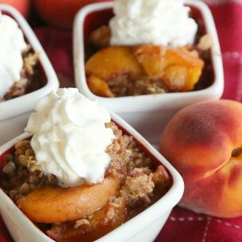

Mom's Peach-Crisp

Description
It's hard to beat the delightfully sweet, fruity, and crumbly flavor of a homemade peach crisp. This top-notch recipe features fresh peaches, brown sugar, oats, and a kiss of cinnamon that combine for a perfectly gooey spoonful. This easy peach crisp recipe comes together in less than an hour, making it ideal for busy days that need a sweet ending.
- 4 cups sliced fresh peaches
- ½ cup all-purpose flour
- ½ cup brown sugar
- ½ cup cold butter
- 1 teaspoon ground cinnamon
- ¼ teaspoon salt
- 1 cup rolled oats
- Preheat oven to 350 degrees F (175 degrees C).
- Arrange sliced peaches evenly in an 8x8-inch baking dish.
- Mix flour, brown sugar, butter, cinnamon, and salt in a bowl using a pastry cutter until crumbly. Fold oats into flour mixture; sprinkle mixture evenly over peaches, pressing down lightly.
- Bake in the preheated oven until crispy and golden brown on top, about 30 minutes.